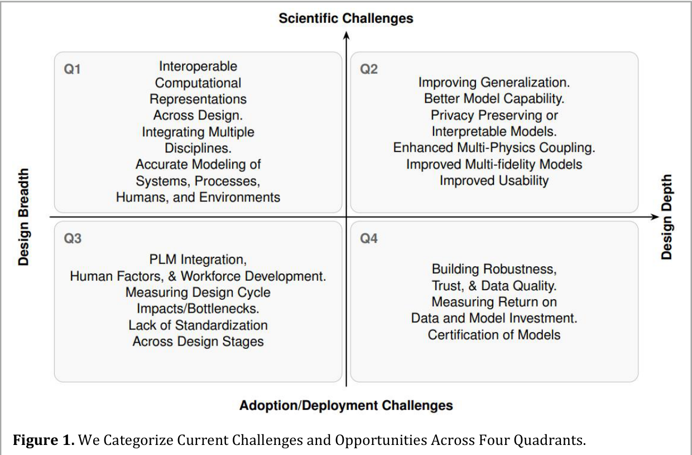

15. 生成式AI与制造设计
Faez Ahmed¹, Wei "Wayne" Chen², Mark Fuge³
¹ 马萨诸塞理工学院机械工程系，美国剑桥
² J. Mike Walker '66 机械工程系，德克萨斯A&M大学，美国大学城
³ 苏黎世联邦理工学院机械与过程工程系，瑞士
E-mail: faez@mit.edu
现状
机器为何尚不能设计其他机器（yet）？ 工程师们长期想象着一个机器能够设计其他机器的世界 [1,2]，而生成式AI系统（如扩散模型和大语言模型）的最新进展使这一梦想重新焕发生机。这些系统已经能够起草代码、总结文档，甚至提出初步的工程概念。那么，为何航空航天公司没有利用它们从头开始设计和认证整个无人机呢？
本文认为，问题不在于想象力的匮乏，而在于一系列科学和组织层面的障碍。为了描绘这一图景，我们沿两个轴来划分问题（图1

）。其中一个轴是设计深度：即AI在建模三维几何、模拟代理模型、设计优化或不确定性量化等专门任务中的表现能力。另一个轴是设计广度：即AI在跨领域和整个产品生命周期中整合数据和知识的能力。
每个轴都受到两种约束。首先是科学上的局限——现有方法本身尚不具备相应能力。其次是采纳障碍——涉及信任、数据、互操作性和组织惯性。这四个象限（图1）共同揭示了AI在现实工程设计中为何承诺多于实践的关键原因。本文首先综述其中部分障碍，然后提出一份简要的路线图以克服它们。
当前与未来挑战
1.1 科学障碍
1.1.1 广度方面的科学障碍：为何AI难以跨越设计全过程
尽管学习设计广度的障碍很多，但主要问题有五个：（1）设计表示之间缺乏互操作性，（2）表示的异质性，（3）模型推理能力有限，（4）人机协作效率低下，（5）无法探索高维设计空间。
广度的第一个障碍是数据碎片化。现代工程生命周期产生了大量信息，包括需求文档、CAD模型、仿真结果、测试日志、物料清单和制造文档，但这些数据散布在互不兼容的系统之中。没有一致、可互操作的历史记录和格式，AI系统就无法学习跨越整个设计生命周期的端到端映射或模型。
第二个问题是异质性。不同领域的表示形式各异——网格、曲样、点云、物料清单——而且子系统的交互方式高度耦合且呈非线性。设计往往需要在多代码环境中使用多学科、多保真度的模型 [3]。当今的领域特定代理模型在分布外（OOD）区域中表现失效。现实工程设计可能需要建模超出原始训练数据的行为，例如飞机面临颤振、控制失稳或电子-热交互等问题。
第三个障碍是现有模型在深度推理和规划能力上的差距。语言模型能够缝合来自不同领域的思想 [4]，但其产生幻觉的倾向 [5] 使其作为任务关键系统的集成器变得不可靠。目前，它们通常仅限于协助头脑风暴或连接高层知识 [6]。生成看似合理却不安全或性能不佳的设计的风险，限制了它们的应用范围。
第四个障碍是人机协作科学尚不成熟。我们尚未理解工程师如何在生命周期中实际与现代AI工具互动，如何建立信任，如何传达隐性目标，如何分配决策权，以及机器与人各自最适合扮演什么角色 [7]。
最后，第五个障碍是许多现有AI模型难以生成具有变革性的详尽设计。基于历史数据训练的模型能够很好地插值，但它们能否真正有所发明？随着设计空间呈组合增长，基于蛮力的数据驱动或优化方法变得难以为继。我们需要能够组合知识并高效、有效搜索的可靠方法。然而，当今的方法和基准几乎完全专注于狭窄的单一阶段任务，而非跨阶段创新。
1.1.2 深度方面的科学障碍：为何窄化模型仍然失效
实现深度方面的科学障碍可分为四类：（1）泛化困难，（2）缺乏模型诊断，（3）输出的快速准确验证，（4）AI与现有工具链的整合。
首先，即使在单一任务中，AI也难以泛化。工程领域的数据集稀疏、专有且任务特定。迁移学习在计算机视觉等领域已显示出减少数据需求的潜力 [8]，但在工程设计中效果较差，因为数据、表示和问题的异质性很高。例如，在汽车空气动力学上训练的模型不太可能迁移到无人机机翼。工程师需要一种方法来了解模型何时在其训练流形内运行，何时不在。
第二个挑战是理解机器学习模型何时以及为何失效。仿真工具（如CFD求解器）可以通过网格收敛等方法进行检验。相比之下，机器学习模型往往难以调试，其误差边界难以解释，尤其是在训练数据被隐藏的情况下。工程师需要校准的不确定性估计和透明的诊断，以实现机器学习的可靠使用。
第三个障碍是验证。如果AI提出了一个设计方案，我们如何知道它满足我们的需求？在某些情况下，基于物理的检查是可行的，但在大多数应用中，仅靠基于物理的验证可能不够充分，而人工验证又难以实现。
最后一个障碍是整合的需求。AI往往试图取代成熟工具，而非与之互补。在这类情境中，混合工具可能大有裨益：AI加速优化器、建议实验方案或引导仿真——同时与现有设计流程、工具和人类用户整合。
1.1.3 科学期望的未来状态：机器必须学会什么
机器设计机器需要什么条件？答案在于四种广泛的AI能力。
首先，组合能力：AI必须识别跨领域耦合和涌现现象 [3]。它必须理解局部几何如何影响全局气动弹性，或增材制造路径如何影响微观结构进而影响疲劳寿命。
其次，抽象能力：AI应学会在适当的保真度下构建和选择正确的代理模型，并知道这些抽象何时失效。像莱特兄弟一样，它应能够设计实验来修正自己的理论。
第三，不确定性下的决策：AI必须智能地规划实验和仿真，跨任务复用知识，量化迁移不确定性，并认识到何时"足够"就是足够。
第四，与人类和社会的协作：AI必须能够引出意图、展示权衡、为其决策辩护，并经受伦理和监管审查。它必须知道何时寻求帮助。
实现这一目标路上的里程碑包括：检测错误理论、发现涌现危险、重构表述不当的问题、揭示隐藏的权衡、在约束下适应、在多个领域展示真正的创新并建立可信的类比。最终，组织本身也必须准备好吸收这些进步。
1.2 采纳障碍
1.2.1 广度方面的采纳障碍：组织惯性
即使方法已经熟练，组织仍面临实际障碍。互操作性是一个问题：跨工具、供应商和遗留系统的数据集成既昂贵又难以管理和维护。知识产权和隐私也是敏感话题。公司需要确保其专有模型和数据集不会泄露到公共系统或流向其他公司。
反馈循环是另一个问题。现实设计场景中的许多关键目标——如检验便利性、可维护性、不断演变的监管优先级——并未明确写入AI目标。随着情况变化，人类必须能够施加新的约束，AI工具也必须能够适应。
流程契合是一个重要障碍。工程工作流程依赖版本控制、迭代审查和认证里程碑。不符合这些流程的AI工具往往被弃用。文化因素也起作用：工程师对"有创意"的机器持怀疑态度，许多人乐于自己完成工作。
与此同时，劳动力也缺乏培训。土木、机械或航空航天等领域的工程师接受的训练是解读CFD、FEA或物理实验，而非AI方法。我们在设计和制造中的AI工具和培训两方面均存在欠缺。
1.2.2 深度方面的采纳障碍：信任与认证
对于深度导向的工具，核心的采纳问题是信任 [9]。首先，工程师想知道模型基于了什么：多少数据，什么质量，什么多样性。如今，这类"数据表"和上下文信息几乎不存在。这一问题因与现有工具缺乏整合而加剧。其次，工程师无法依赖缺乏稳健性、泛化能力、可解释性、透明性、可重复性和可问责性的模型 [10]。
认证增加了另一个障碍。例如，航空监管机构要求可审计的证据链。如果一个设计来自黑箱AI，谁来签字批准就成了一个问题。"接近现有设计"的增量修改——如通过迭代优化获得的设计——可能更容易认证，但这会抑制激进的AI支持创新。
投资回报率（ROI）也难以评估，因为缺乏标准化的评估方法。AI何时优于经典方法？在哪些指标上？在什么问题下？改善多少？除非有明确的比较证据且演示能够进入生产阶段，否则企业相对于可信工作流程的AI ROI可能难以估算。
1.2.3 深度方面的采纳障碍：信任与认证
对于深度导向的工具，核心的采纳问题是信任 [9]。首先，工程师想知道模型基于了什么：多少数据，什么质量，什么多样性。如今，这类"数据表"和上下文信息几乎不存在。这一问题因与现有工具缺乏整合而加剧。其次，工程师无法依赖缺乏稳健性、泛化能力、可解释性、透明性、可重复性和可问责性的模型。
应对挑战的科技进步
我们基于四大支柱来讨论研究和部署的路线图：数据和基础设施、模型能力与泛化、劳动力与组织、信任与合规。（四大支柱、三级视野、明确指标）
2.1 研究路线图
数据和基础设施。 我们需要开放且与设计相关的数据集和基准 [11]，能够跨越模态、学科和生命周期阶段，并衡量可制造性和ROI等指标 [12]。共享实验平台应允许进行大规模、可控制的比较。
模型能力与泛化。 多模态基础模型和基于智能体的架构能够解读多样的工程制品并管理相互依赖。但它们必须超越插值，走向稳健的OOD泛化：物理先验 [13]、因果规则 [14]、主动学习 [15] 和元学习 [16] 可能至关重要。工程领域也需要样本效率和导航多模态的能力。
劳动力与组织。 我们需要民族志和人机交互研究来了解工程师的实际工作方式，同时需要新的互操作性标准来简化工具链整合。为缩小学术研究与行业实践之间的差距，应研究AI在真实工程团队中的整合 [17]。教育也必须为"AI精通"的工程师应对混合工作流程和现实挑战做好准备。
信任与合规。 模型必须产生可解释、可审计的设计追溯记录，符合认证要求 [18]。标准化评估框架应与监管期望相匹配。
2.2 部署路线图
数据和基础设施。 近期优先事项是制定数据治理标准、统一平台并策划用于基准测试的开放数据集。跨行业投资生成跨越领域和多模态表示的大规模合成和真实数据集，将扩大GenAI的适用范围。最终，允许AI以自监督方式访问求解器，将使其能够进行自身可扩展的数据集增强。
模型能力与泛化。 早期工作应聚焦于模型准确性、效率和约束可行性。一旦实现，焦点可以转向稳健泛化、处理多目标以及可靠的OOD性能。最终，AI应走向以最少人工指导处理系统级设计任务。
劳动力与组织。 短期内，组织应启动AI素养计划、更新课程并运行试点项目，以培养技能和适应工作流程。进展需要正式的合作框架、混合团队和共享最佳实践。长期目标是建立一种AI精通的文化，使工程师能够在劳动力研究和采纳指标的指导下与GenAI进行常规协同设计。
信任与合规。 短期工作必须将AI生成的设计映射到现有认证标准，并建立伦理/知识产权指南。标准化验证、开放基准和问责框架也将至关重要。长期来看，AI设计产品的正式认证路径将逐步形成，由监管机构、工业界和学术界共同确保可靠性、安全性和合规性。
2.3 衡量进展：从基准到实际成果
指标必须追踪高层系统成果和技术细节。在系统层面：设计周期缩短、首次认证通过率提高、跨学科整合范围扩大，以及劳动力的采纳与满意度。在技术层面：有效性、样本效率、校准的不确定性、OOD稳健性、可制造性和ROI是关键。
重要的是，指标必须在四个象限之间解耦——广度与深度、科学与采纳——以使利益相关者能够准确看到进展发生在哪里、停滞在哪里。在设计和制造领域建立大量多样化和现实的基准以衡量进展，仍需要大量的研究和投资 [19]。相比之下，由于多样的基准 [20]，LLM的进展得到了加速——设计和制造领域能否带来同样的益处？
结语
机器为何不能设计机器？ 机器尚不能设计机器的原因并非一个单一的缺失突破，而是科学和制度层面赤字的组合。从科学上讲，我们的模型缺乏跨异质性、高度耦合领域的稳健泛化、不确定性量化和系统级推理能力。从制度上讲，我们缺乏可互操作的数据基础设施、认证框架、文化接受度和劳动力整合。
前进的道路清晰明确：建立与领域相关的基准和数据集；用物理、不确定性和组合推理强化模型；重新设计人机协作的工作流程；将信任和认证流程编纂成法。只有在广度和深度两个维度上同时解决科学和采纳问题，我们才能将AI设计从精巧的演示转化为经过认证的工程实践。
致谢
Ahmed PI感谢美国国家科学基金会 CAREER Award No. 2443429 的支持。
参考文献
[1] Finger S and Dixon J R 1989 A review of research in mechanical engineering design. Part I: Descriptive, prescriptive, and computer-based models of design processes. Research in engineering design 1 51–67
[2] Antonsson E K and Cagan J 2001 Formal engineering design synthesis. (Cambridge University Press)
[3] Antonau I, Warnakulasuriya S, Baars S, Baimuratov I, Wittenborg T, Kreuzeberg L, Attravanam A and Wüchner R 2025 Challenges in realizing 3rd generation multidisciplinary design optimization. Advances in Computational Science and Engineering 5 1–21
[4] Bordas A, Le Masson P, Thomas M and Weil B 2024 What is generative in generative artificial intelligence? A design-based perspective. Research in Engineering Design 35 427–443
[5] Ji Z, Lee N, Frieske R, Yu T, Su D, Xu Y, Ishii E, Bang Y J, Madotto A and Fung P 2023 Survey of hallucination in natural language generation. ACM computing surveys 55 1–38
[6] Ren R, Ma J and Luo J 2025 Large language model for patent concept generation. Advanced Engineering Informatics 65 103301
[7] Zhang G, Raina A, Cagan J and McComb C 2021 A cautionary tale about the impact of AI on human design teams. Design studies 72 100990
[8] Zhuang F, Qi Z, Duan K, Xi D, Zhu Y, Zhu H, Xiong H and He Q 2020 A comprehensive survey on transfer learning. Proceedings of the IEEE 109 43–76
[9] Siau K and Wang W 2018 Building trust in artificial intelligence, machine learning, and robotics. Cutter business technology journal 31 47
[10] Niresi K F, Bissig H, Baumann H and Fink O 2024 Physics-enhanced graph neural networks for soft sensing in industrial internet of things IEEE Internet Things J.
[11] Phuyal S, Bista D and Bista R 2020 Challenges, opportunities and future directions of smart manufacturing: A state-of-the-art review Sustain. Prod. Consump. 23 287–302 (doi: 10.1016/j.spc.2020.06.002)
[12] Battaglia P W, Hamrick J B, Bapst V, Sanchez-Gonzalez A, Zambaldi V, Malinowski M, Tacchetti A, Raposo D, Santoro A, Faulkner R et al 2018 Relational inductive biases, deep learning, and graph networks arXiv:1806.01261
[13] Sharma V and Fink O 2025 Dynami-CAL GraphNet: A physics-informed graph neural network conserving linear and angular momentum for dynamical systems arXiv:2501.07373
[14] Sharma V, Oddon R T, Tesini P, Ravesloot J, Taal C and Fink O 2025 Equi-Euler GraphNet: An equivariant, temporal-dynamics informed graph neural network for dual force and trajectory prediction in multi-body systems arXiv:2504.13768
[15] Zhu G, Wang S and Wang L 2024 Heterogeneous graph neural network for modeling intelligent manufacturing systems Meas. Sci. Technol. 36 015114
[16] Peng J-Z, Hua Y, Li Y-B, Chen Z-H, Wu W-T and Aubry N 2023 Physics-informed graph convolutional neural network for modeling fluid flow and heat convection Phys. Fluids 35 085104
[17] Xue T, Gan Z, Liao S and Cao J 2022 Physics-embedded graph network for accelerating phase-field simulation of microstructure evolution in additive manufacturing npj Comput. Mater. 8 201
[18] Zhao M, Taal C, Baggerohr S and Fink O 2025 Graph neural networks for virtual sensing in complex systems: Addressing heterogeneous temporal dynamics Mech. Syst. Signal Process. 230 112544
[19] Yu B, Yin H and Zhu Z 2018 Spatio-temporal graph convolutional networks: A deep learning framework for traffic forecasting Proc. IJCAI 3634–3640
[20] Sanchez-Gonzalez A, Godwin J, Pfaff T, Ying R, Leskovec J and Battaglia P 2020 Learning to simulate complex physics with graph networks Proc. ICML 8459–8468
[21] Shivaditya M V, Alves J, Bugiotti F and Magoulès F 2022 Graph neural network-based surrogate models for finite element analysis Proc. DCABES 54–57
[22] Maurizi M, Gao C and Berto F 2022 Predicting stress, strain and deformation fields in materials and structures with graph neural networks Sci. Rep. 12 21834
[23] Zhao Y, Li H, Zhou H, Attar H R, Pfaff T and Li N 2024 A review of graph neural network applications in mechanics-related domains Artif. Intell. Rev. 57 315
[24] Donon B, Clément R, Donnot B, Marot A, Guyon I and Schoenauer M 2020 Neural networks for power flow: Graph neural solver Electr. Power Syst. Res. 189 106547
[25] Satorras V G, Hoogeboom E and Welling M 2021 E(n) equivariant graph neural networks Proc. ICML 9323–9332
[26] Tierz A, Alfaro I, González D, Chinesta F and Cueto E 2025 Graph neural networks informed locally by thermodynamics Eng. Appl. Artif. Intell. 144 110108